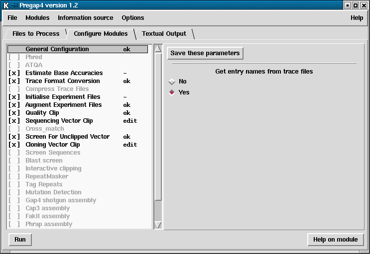

The "Configure Modules" dialogue is available from the Modules menu or, when using the compact window style, by pressing the Configure Modules tab.
This dialogue contains the main interface through which most of the user's interaction with pregap4 will be performed. The left side of the display contains a list of the currently loaded modules. One module in this list will be highlighted. The right side of the display shows the configuration panel for this highlighted module.

The module list shown on the left consists of a series of module names and
their status, and is termed the "enable status". The [ ] and
[x] strings at the left of the name indicates whether this module is
enabled; crossed boxes are enabled modules. The highlighting is another
indication of whether the module is enabled. The "General Configuration"
module is mandatory and cannot be disabled. The text to the right of the
module name indicates whether the module has been given all the parameters
needed for it to process. This will be one of "ok" (all configuration options
have been filled in), "-" (no configuration options exist for this module),
"edit" (further configuration is required") or blank (this module is
disabled).
The "enable status" can be toggled by left clicking on the "[ ]" to the
left of the module name. The enable status can be written to the current
Pregap4 configuration file using the "Save Module List" or "Save All
Parameters" commands in the Modules menu. Left clicking anywhere on a module
name in the module list will switch the pane on the right side of the window
to display any available parameters for this module. Not all modules will have
parameters to configure.
For modules that do have parameters, the top line of the configuration panel will contain a button labelled "Save these parameters". This button will save all parameters for this module to the configuration file. Note that this is not the same as the "Save all parameters" option in the main Modules menu, as this saves all parameters in all modules.